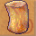

這邊的進階原料收集技能都需要使用『特製工具』才能工作
【基本產物】
 （伐木技能） （伐木技能）  （伐木技能）  （伐木技能） （挖礦技能） （挖礦技能）  （挖礦技能）  （挖礦技能） （研磨技能） （研磨技能）  （研磨技能）  （研磨技能）  （研磨技能）  （研磨技能） |
 （伐木技能） （伐木技能） （伐木技能） （伐木技能） （挖礦技能） （挖礦技能） （挖礦技能） （挖礦技能） （研磨技能） （研磨技能） （研磨技能） （研磨技能） （研磨技能） （研磨技能） |